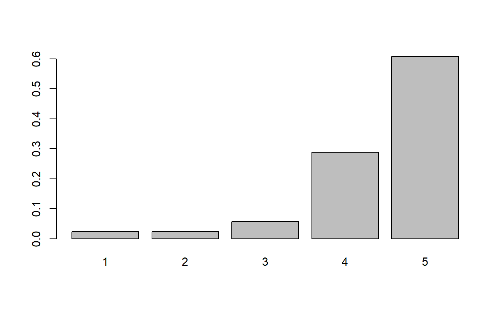
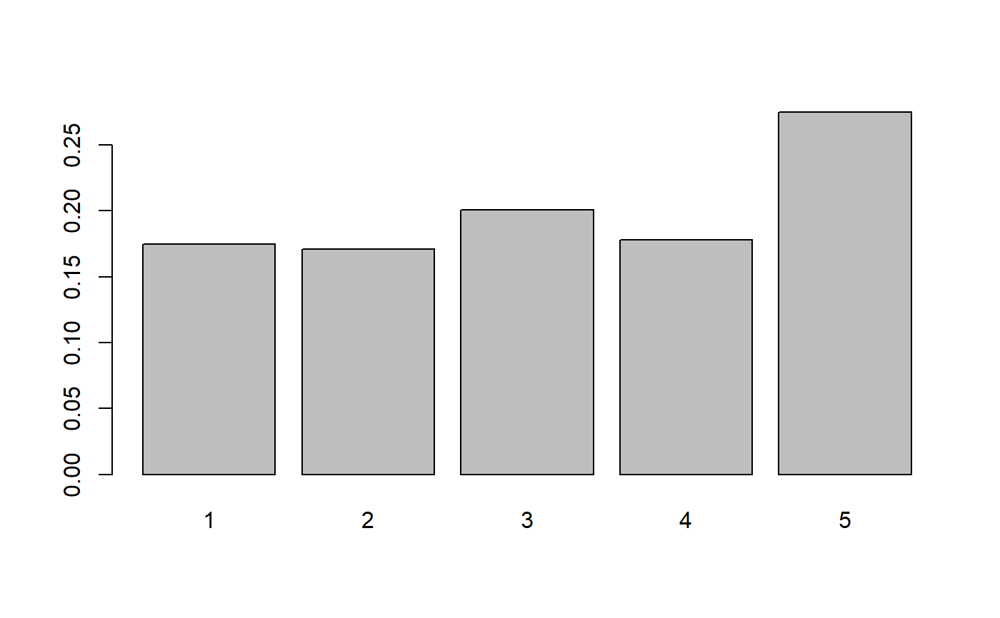

Density, distribution function, quantile function and random generation for the cub distribution given parameters \(\pi\) and \(\xi\).
dcub(x, pi, xi, m, log = FALSE) pcub(q, pi, xi, m, lower.tail = TRUE, log = FALSE) qcub(p, pi, xi, m, lower.tail = TRUE, log = FALSE) rcub(n, pi, xi, m = 5)
| x, q | vector of quantiles. |
|---|---|
| pi | uncertainty parameter belongs to |
| xi | feeling parameter belongs to |
| m | the maximum value. |
| log | logical; if TRUE, densities are given as log. |
| lower.tail | logical; if TRUE (default), probabilities are |
| p | vector of probabilities. |
| n | number of observations |
# Examples with dcub dcub(x=4, pi=0.3, xi=0.7, m=5)#> [1] 0.16268dcub(x=1, pi=0.5, xi=0.4, m=8)#> [1] 0.0633192dcub(x=c(4, 1), pi=c(0.3, 0.5), xi=c(0.7, 0.4), m=c(5, 8))#> [1] 0.1626800 0.0633192# Examples with pcub # low xi is associated with high ratings pcub(q=5, pi=0.5, xi=0.2, m=10, lower.tail=FALSE)#> [1] 0.7402093# high pi is associated with indecision in choosing pcub(q=3, pi=0.9, xi=0.5, m=4)#> [1] 0.8625# probability for several quantiles pcub(q=c(1,3,5), pi=0.3, xi=0.6, m=5)#> [1] 0.17888 0.66624 1.00000# Examples with qcub # low xi is associated with high ratings qcub(p=0.1, pi=0.5, xi=0.1, m=7, lower.tail=TRUE)#> [1] 2# high pi is associated with indecision in choosing qcub(p=0.86, pi=0.9, xi=0.5, m=4)#> [1] 3#quantiles for several probabilities qcub(p=c(1,0.5,0.9), pi=0.3, xi=0.6, m=5)#> [1] 7 3 5# Examples with rcub # Random sample, low xi is associated with high ratings x <- rcub(n=1000, pi=0.9, xi=0.1, m=5) barplot(prop.table(table(x)))# Random sample, low pi is associated with random choices y <- rcub(n=1000, pi=0.1, xi=0.1, m=5) barplot(prop.table(table(y)))